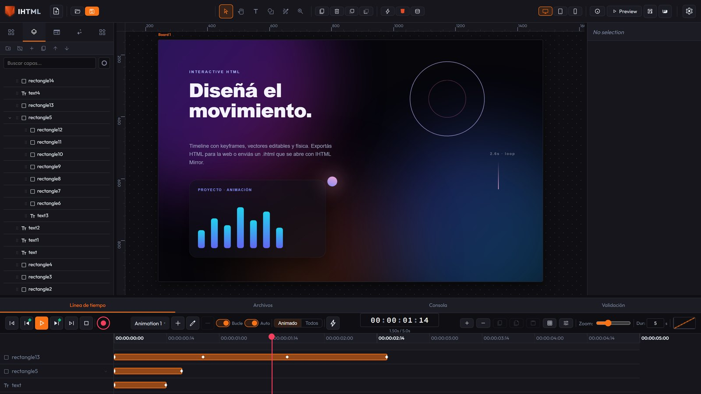
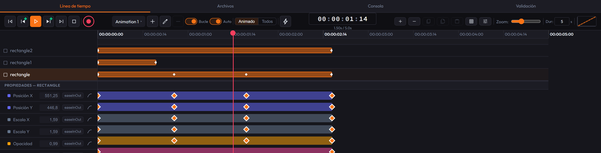

Guida all'Uso — IHTML (Interactive HTML)
Tutto quello che fa l'editor: interfaccia, vettori, artboard, timeline, azioni, fisica, esportazione e importazione, scorciatoie da tastiera e l'API pubblica.
1. Primi passi
-
Scarica e installa IHTML (Windows, macOS, Linux o
Android), oppure clona il repo ed esegui
npm installenpm run dev. - La tela centrale è la tua scena (uno o più artboard, vedi più sotto). La barra superiore ha gli strumenti di selezione/creazione; la barra laterale sinistra mostra i tuoi Layers; quella destra è l'Inspector delle proprietà dell'elemento selezionato; in basso c'è la Timeline.

Lingua e tema
In alto a destra, vicino agli strumenti della tela, ci sono due selettori:
- Lingua — 8 disponibili (English, Español, Português, Français, Deutsch, Italiano, 日本語, 中文): traduce tutta la navigazione principale e l'Inspector completo (Design/Data/Actions/Fisica).
- Tema — sei temi tra chiari e scuri (grigio scuro di default).
Entrambi vengono ricordati tra le sessioni (restano nel tuo browser) e sono una preferenza
dell'editor — mai salvati dentro il progetto .ihtml né riflessi nell'HTML
esportato.
Creare un elemento
Usa gli strumenti della barra superiore (o il pannello Elements a sinistra) per aggiungere testo, forme, pulsanti, input, card, navbar e altri componenti già pronti. Il nuovo elemento appare selezionato, con la sua bounding box visibile.
Gli strumenti della barra superiore
| Strumento | Cosa fa |
|---|---|
| Select (V) | Selezionare, trascinare; trascinare sullo sfondo disegna un riquadro di selezione multipla. |
| Shape (S) | Trascina per disegnare un rettangolo vettoriale; con Alt esce un'ellisse. |
| Text (T) | Un clic crea un elemento di testo in quel punto. |
| Zoom (Z) | Clic avvicina, Alt+clic allontana. |
| Hand (H) | Fare pan senza dover tenere premuta la barra spaziatrice. |
| Pen (P) | Disegnare un path a mano (vedi sotto). |
Shape e Text tornano da sole a Select dopo la creazione, così il clic successivo non crea per sbaglio un altro elemento.
Vettori (forme disegnate)
Le forme dello strumento Shape — e le card della categoria Shapes del pannello Elements
(Rectangle, Ellipse, Triangle, Polygon, Star, Spiral) — sono elementi vettoriali
veri: vengono esportati come un <svg> con un <path>
reale, non come un div con angoli arrotondati. Triangle/Polygon nascono come poligoni regolari (3 e
6 lati), Star come stella a 5 punte, Spiral come spirale aperta. Il numero di lati/punte resta
fisso alla creazione; per una forma diversa, regola i nodi a mano.
-
Fill, Stroke e Stroke width si modificano in Element Properties,
dentro la scheda Data dell'Inspector (accettano
noneper lasciare senza riempimento o senza contorno) — non nella sezione Fill/Background di Design, che per un vettore non appare nemmeno: quella sezione colora lo sfondo del riquadro che avvolge il disegno, non il<path>stesso. -
Fill e Stroke portano un campione colore accanto al campo. Il campo di testo continua a
comandare (puoi comunque digitare
noneper togliere il riempimento). -
I campi numerici (Stroke width, min/max di uno slider, buffer di un Canvas...) si possono
trascinare per cambiare il valore (icona ⇄ accanto al campo):
Shiftpiù fine,Altpiù grosso. -
Ridimensionare l'elemento scala il disegno: la geometria vive nel proprio spazio e il
viewBoxlo stira fino al riquadro. - L'ellisse viene salvata come quattro segmenti bezier reali, non come un cerchio CSS.
-
Clip children to shape (Data > Element Properties): gli elementi annidati
dentro questo vettore diventano invisibili fuori dall'area del poligono — una maschera di
ritaglio (CSS puro con
clip-path). Ha effetto solo se il vettore ha figli. - Animate points (pulsante ◆ alla fine delle sue proprietà): un vettore può animare l'intera forma con keyframe. Tocca il pulsante in punti diversi della Timeline dopo aver modificato i nodi e quella forma resterà registrata come keyframe; l'editor interpola ogni nodo separatamente (morphing fluido). Interpola bene solo tra due forme con lo stesso numero di nodi.
Lo strumento Pen (disegnare un path)
- Ogni clic sulla tela aggiunge un vertice retto (angolo).
- Clic e trascina dà a quel vertice maniglie bezier simmetriche — il gesto classico per un nodo "morbido".
- Invio chiude il path come aperto (una linea).
- Un clic vicino al primo vertice lo chiude come poligono.
- Esc scarta l'intero disegno — non viene creato nessun elemento.
Al termine, il path entra direttamente in modalità modifica nodi.
Modificare i nodi di un vettore esistente
Doppio clic su qualsiasi elemento vettoriale entra in modalità modifica: un punto bianco trascinabile per nodo e un punto blu per maniglia bezier.
- Trascinare un nodo (bianco) lo sposta — l'intera curva si muove con lui.
- Trascinare una maniglia (blu) cambia solo quella curva.
- Canc cancella il nodo selezionato (mai sotto ciò di cui un path valido ha bisogno: 2 nodi aperto, 3 chiuso).
- Esc esce dalla modalità modifica e torna alle maniglie normali.
Spostare, ridimensionare, ruotare
- Trascina per spostare, oppure usa le frecce (Shift + freccia = 10px). Con più selezionati, si sposta l'intero gruppo insieme.
- Maniglie della bounding box per ridimensionare: Shift mantiene le proporzioni, Alt dal centro, Ctrl si aggancia alla griglia.
- La maniglia circolare ruota l'elemento.
- Un elemento annidato in un genitore ruotato/scalato segue il mouse o le frecce sul proprio asse visuale, non sull'asse dello schermo.
-
Snapping intelligente: si aggancia da solo al bordo/centro di elementi vicini o a guide
manuali, con linea rosa/ciano durante l'aggancio.
Ctrlforza l'aggancio alla griglia (mutuamente esclusivo). - Righello e guide: trascinare dalla barra grigia in alto o a sinistra della tela crea una guida manuale (linea ciano). Doppio clic la cancella; trascinarla la riposiziona.
Artboard (più aree di lavoro)
Puoi avere più di un artboard sulla stessa tela, ognuno con dimensione e sfondo propri. Il pulsante "Add Artboard" (o il menu contestuale dello sfondo) ne crea uno nuovo accanto a quello attivo.
- Un clic sullo sfondo di un artboard lo attiva (i nuovi elementi vanno lì).
- Trascinare la sua etichetta lo sposta; trascinare la sua maniglia d'angolo lo ridimensiona.
-
Con le frecce e niente selezionato si sposta l'artboard attivo;
Cancsenza selezione lo cancella (mai l'ultimo rimasto). - Export HTML esporta sempre solo l'artboard attivo, non l'intero progetto.
Menu contestuale (clic destro)
Un unico menu condiviso, con opzioni a seconda di dove clicchi: su un elemento (duplica, elimina, copia/incolla, porta in primo/secondo piano...), sullo sfondo vuoto (incolla, seleziona tutto, aggiungi artboard), sullo sfondo di un artboard specifico (rinomina, duplica, elimina quello), o su una card del pannello Elements (aggiungila alla tela).
- Con 2+ selezionati: griglia di allineamento (sinistra/centro/destra, alto/centro/basso) rispetto al rettangolo che avvolge tutta la selezione.
- Con 3+: anche distribuisci spaziatura orizzontale/verticale (il primo e l'ultimo restano fissi e il resto si distribuisce con spazi identici).
-
Con 2+ vettori fratelli: griglia di operazioni booleane (Union, Subtract,
Intersect, Exclude) usando
fill-ruleeclip-pathnativi dell'SVG. Il risultato si renderizza esatto e si anima/esporta come qualsiasi vettore, ma non resta come un'unica curva semplice modificabile nodo per nodo.
L'Inspector (pannello destro)
Quattro schede esclusive — Design, Data, Actions e Fisica: se ne vede una sola alla volta.
- Design — tutto ciò che è visuale in un unico scroll continuo: Posizione/Dimensione/ Origine/Spaziatura, Flex/Grid Layout (appare mettendo Display su Flex o Grid), Aspetto (Riempimento, Opacità, Blend Mode, Bordo, Raggio, Ombra), Tipografia (include ricerca di font web, colore testo, ombra del testo) ed Effetti (scala, inclinazione, 3D, filtri CSS). Ogni sezione è una fisarmonica che parte aperta solo se ha già un valore proprio. Inoltre, Riempimento/Opacità/Blend Mode/Bordo/Raggio/Ombra si adattano al tipo di elemento: un vettore non mostra Riempimento/Bordo/Raggio (vivono in Data > Element Properties), un testo non mostra Bordo/Blend Mode, un'immagine/video non mostra Riempimento. Se una sezione ha già un valore reale, appare comunque — non perdi mai l'accesso a qualcosa in uso.
- Data — proprietà HTML: Element Info (ID/Type/Name), selettore di Stato (Normal/Hover/Active), CSS Classes, Element Properties, Custom Attributes e Accessibility.
- Actions — interazioni senza codice (sezione 4).
- Fisica — simulazione reale (sezione 4).
Display (Block/Flex/Grid) si sceglie con 3 pulsanti a icona; le varianti meno comuni
(Inline Block/Flex/Grid, None) vivono nel selettore "···" accanto. Flex/Grid Layout (Direction,
Wrap, Justify, Align, Align Self) e Stroke Style (Solid/Dashed/Dotted/Double) si scelgono anche con
pulsanti a icona.
Columns/Rows di Grid si modificano come elenco di tracce trascinabili ("+ Track" aggiunge, ×
rimuove; minimo 1); valori come auto o minmax(...) si modificano come
testo normale.
Un figlio di un contenitore Flex/Grid rispetta davvero il layout del genitore e mantiene
larghezza/altezza (non si restringe silenziosamente).
Proprietà specifiche del tipo di elemento
In Data, sotto CSS Classes, appare Element Properties con le proprietà HTML reali del tipo selezionato. Esempi:
| Elemento | Proprietà |
|---|---|
| Range Slider | Min, Max, Step, Value |
| Meter | Min, Max, Value, Low, High, Optimum |
| Progress | Value, Max |
| Inputs | Type, Name, Required, Disabled, Read only |
| Textarea | Name, Rows, Max length, Required, Disabled |
| Image / Picture | Source, Alt text, Fit, Loading |
| Video / Audio | Source, Controls, Autoplay, Loop, Muted, Poster |
| Link | URL, Target, Rel |
| iFrame ed embed | Source, Title, Loading |
| Details / Dialog | Open |
| Vector | Fill, Stroke, Stroke width, Clip children |
| Marquee | Direction, Behavior, Speed, Delay |
| Canvas | Buffer width, Buffer height |
La sezione non appare per i tipi senza proprietà proprie (Div, Text). Ciò che non è nell'elenco si
continua a modificare con Custom Attributes (data-*, aria-*,
role, title...). Un valore uguale al default non viene salvato né appare
nell'HTML esportato.
Importare un file locale (Image/Picture/Video/Audio)
Il campo Source (e Poster in Video) porta un pulsante Choose File: il file
resta incorporato come vero URI data: — portabile tra il tuo computer e il web senza
dipendere da server esterni (l'app non ha backend). Puoi anche incollare con Ctrl+V
un'immagine copiata dal browser o dal file explorer: se hai già un'Image/Picture/Video selezionata
la sostituisce; altrimenti crea una nuova Image. Incollare un elemento copiato dentro l'editor
continua a funzionare allo stesso modo (l'editor guarda prima se c'è un'immagine negli appunti di
sistema).
Testo modificabile nei componenti decorativi
Badge, Avatar, Tooltip, Alert Box, Tab Bar e Breadcrumb modificano il loro testo con
il campo Content (Design). Tab Bar e Breadcrumb usano un elenco separato da virgole —
Overview,Pricing,FAQ dà tre schede. Card, Pricing, Navbar e Pagination continuano con
contenuto di esempio fisso (hanno più di un testo proprio; manca ancora un passaggio dedicato).
Tooltip è un mockup statico per progettarne l'aspetto; per un tooltip vero abbinalo con
Actions (hover → Show / mouseLeave → Hide, con il Tooltip che parte nascosto).
Contenitori semantici (Header, Footer, Aside, Nav, Main...)
La categoria Semantic (Header, Nav, Main, Aside, Footer, Section, Article, Figure,
Figcaption) esporta con il suo tag HTML reale (<header>,
<aside>...) — importante per SEO/accessibilità. I cinque landmark
(Header/Nav/Main/Aside/Footer) nascono occupando un bordo reale dell'artboard; sono solo un punto
di partenza: si modificano come qualsiasi altro elemento e non portano colore né bordo propri.
Accessibilità
Sotto Custom Attributes, la sezione Accessibility si applica a qualsiasi elemento:
ARIA Label, ARIA Role (con ruoli comuni e "(automatic)"), Hide from screen
readers (aria-hidden) e Keyboard focusable (tabindex="0").
Tutti e quattro escono come veri attributi HTML — sulla tela e nel file esportato — senza una
sola riga di JavaScript. Per qualcosa di più specifico (aria-describedby,
aria-live...) hai comunque Custom Attributes.
Riempimento (Fill): colore pieno, sfumatura o immagine
Il campo Fill è un pulsante-riassunto (campione + etichetta) che apre un popover con schede — Solid / Linear / Radial / Conic / Image:
- Solid — un colore, con il selettore.
- Linear / Radial / Conic — elenco di stop (2+ colori con posizione 0-100%, "+ Add Stop"), più Angle (Linear/Conic) o Center X/Y (Radial).
- Image — un URL o importa un file locale (URI
data:).
Il selettore colore (lo stesso in Fill, Border, Shadow, Text Color, Text Shadow e gli stop) porta un quadrato Saturazione/Luminosità, uno slider di Hue e di Alpha (con sfondo a scacchiera), e un campo di testo che cicla HEX → RGBA → HSLA con un clic — incollare uno qualsiasi dei tre formati funziona anche. In Fill/Border/Text Color/Vector Fill-Stroke, con Solid attivo il selettore appare da solo, incollato subito sotto il popover — un unico clic per vederlo intero, senza dover aprire a parte il piccolo campione.
Linea di sfumatura direttamente sulla tela (con un elemento con Fill Linear o Radial): trascini la linea direttamente sul disegno, stile Affinity Designer. Con la casella Automatico del popover attivata (default), scegliere Linear o Radial la mostra già da sola, senza premere altro; tornare a Solid la nasconde. Il tasto G continua a funzionare come mostra/nascondi manuale, oltre a questo. Linear = due estremità trascinabili (la linea smette di essere legata al centro del riquadro, una vera limitazione della sintassi CSS aggirata con una sfumatura SVG dietro); Radial = una maniglia centrale e una di bordo (un cerchio, non un'ellisse); in entrambe le modalità c'è un punto per stop (trascinalo per spostarlo, doppio clic sulla linea aggiunge uno stop); Esc esce. Digitare un numero in Angle/Center X/Y torna alla modalità centrata di sempre. Conic mantiene il campo angolo numerico.
Stati: Normal / Hover / Active
Nella scheda Data, sopra CSS Classes, c'è un selettore a tre pulsanti. Mentre sei su
Hover o Active, tutto ciò che modifichi in Typography/Colors/Borders/Effects/Layout
(in Design) viene salvato per quello stato. La tela lo mostra dal vivo (l'elemento
selezionato viene "forzato" a mostrare lo stato). Viene esportato come regola CSS reale —
#id:hover{...} / #id:active{...} — senza JavaScript.
<button>/<a> interno) il colore/sfondo di quel contenuto
interno non si può cambiare né per stato né per classe condivisa. Un Div o un Text non hanno
questo problema.
2. Livelli
Il pannello sinistro (scheda Layers) mostra la gerarchia degli elementi. Puoi raggruppare, separare, promuovere/degradare e riordinare per z-index (porta in primo piano / manda indietro).
- Clic normale seleziona un solo elemento.
Ctrl/Cmd+clic aggiunge o toglie un elemento specifico.Shift+clic seleziona l'intervallo visibile (rispetta l'annidamento).
Ctrl+C / Ctrl+X / Ctrl+V copiano, tagliano e incollano (con
il focus sulla tela o su Layers). Copiare un genitore con il suo figlio mantiene il legame
all'incollaggio. Incollare più volte distanzia leggermente ogni copia invece di impilarle.
Trascinare per annidare: rilasciare un elemento su un altro lo rende suo figlio, a meno che
la destinazione sia un vero "void element" (<img>, <input>,
<br>, <hr>... — non possono avere contenuto); rilasciarlo lì
lo riordina come fratello. Qualsiasi altro tipo (<div>,
<button>, <section>, <a>...) può bene
essere un genitore.
Bloccare i livelli e Guide Layers (stile After Effects)
- Bloccare (lucchetto su ogni riga di Layers): impedisce di selezionare, spostare, ridimensionare o ruotare QUELL'elemento dalla tela — puoi comunque selezionarlo dal pannello Layers stesso.
- Segna come Guide Layer (menu contestuale): visibile e modificabile nell'editor, ma completamente escluso dall'HTML esportato (insieme a qualsiasi suo figlio) — utile per righelli, note o riferimenti di design.
3. Animazione (Timeline)
Con molti livelli, l'elenco a sinistra (nomi) e le tracce a destra (keyframe) scorrono verticalmente insieme, dentro la loro fascia ad altezza fissa.
Diverse animazioni nominate indipendenti
IHTML permette timeline separate e indipendenti:
- Il selettore dell'intestazione mostra l'animazione attiva; accanto ci sono "+" (Add Animation) — che ne crea una nuova e chiede un nome —, la matita (Rename) e il cestino (Delete). Non si può eliminare l'ultima (il pulsante resta disabilitato); eliminarne una fa perdere i suoi keyframe su tutti gli elementi e chiede conferma.
- Loop e Auto appartengono all'animazione selezionata: Loop ricomincia all'arrivo alla fine (disattivato, si ferma sull'ultimo frame); Auto parte da sola al caricamento della pagina esportata. Una nuova animazione non parte da sola: il senso di averne diverse è innescarle con azioni Play Timeline.
- I keyframe restano legati SOLO all'animazione attiva: la stessa proprietà può avere un keyframing diverso in ogni animazione.
- Cambiare animazione aggiorna Timeline, tela e playhead.
Marcatori di azione sulla Timeline
Il pulsante del fulmine (o doppio clic sulla banda sottile sotto il righello) aggiunge un marcatore nella posizione del playhead: scatena un'azione quando la riproduzione raggiunge quel millisecondo, senza che il visitatore tocchi nulla.
- Si modifica nello stesso pannello Actions dell'Inspector (stessi tipi; la riga Trigger sparisce: il "quando" è la posizione del marcatore).
- Si trascina per spostarlo e si elimina con Canc nello stesso pannello.
- Scatta una volta per passaggio (con Loop, scatta di nuovo a ogni giro).
Per creare un keyframe per una proprietà
- Scegli (o crea) l'animazione su cui vuoi lavorare.
- Seleziona un elemento e clicca sul rombo (◆) accanto alla proprietà da animare (posizione, opacità, colore, scala...) per attivare il tracciamento keyframe di quella proprietà.
-
Spostati su un altro punto della timeline (trascinando il playhead) e cambia il valore: un
keyframe viene creato automaticamente se la modalità Auto-Keyframe (pulsante rosso ◆,
scorciatoia
R) è attiva; altrimenti usa "Add Keyframe at Playhead". - Doppio clic su un keyframe cicla la sua curva di easing (linear, ease-in/out, cubica, back, bounce, elastica...).
-
Spazioriproduce/mette in pausa; i pulsanti del frame precedente/successivo avanzano frame per frame; la durata totale si controlla nel campo Dur (per animazione).

Registrazione automatica (REC / Auto-Keyframe)
Con R attivo, IHTML crea un keyframe al tempo del playhead ogni volta che modifichi
una proprietà già tracciata — include nodi e maniglie di un vettore (trascinare un punto o
la sua maniglia bezier registra l'intero nodo). Mentre REC è attivo, appare in alto a destra un
badge rosso lampeggiante ("● REC").
Selezionare, trascinare e copiare/incollare keyframe
-
Cliccare su un keyframe lo seleziona;
Shift+clic aggiunge/toglie; un marquee su spazio vuoto seleziona tutti quelli che tocca. - La barra piatta tra due keyframe consecutivi è anch'essa selezionabile e trascinabile: sposta l'intero segmento mantenendo l'intervallo.
- Trascinare vicino al playhead o a un altro keyframe si aggancia esattamente a quel tempo (guida verde).
-
Ctrl+C/Ctrl+Vcopiano/incollano il/i keyframe selezionato/i al tempo del playhead (oltre ai pulsanti Copy/Paste/Duplicate accanto al selettore di easing); con più d'uno, viene mantenuta la loro spaziatura relativa.
Menu contestuale della Timeline (clic destro)
- Su un keyframe: Copy, Duplicate, Delete, Interpolation (griglia visuale di curve) e Move to playhead.
- Sul segmento: Copy, Duplicate, Delete (si applicano a entrambe le estremità come gruppo).
- Su spazio vuoto di una traccia: Paste, al tempo sotto il cursore.
- Sul nome di un elemento: lo stesso menu elemento di Layers e la tela.
- Sul righello: "Extend +1s" aggiunge un secondo alla durata totale.
File (collegato alla tua cartella reale)
Accanto alla scheda Timeline c'è Files: un gestore collegato DIRETTAMENTE a una cartella reale del tuo computer, come il pannello FileSystem di Godot/Unreal/Unity. Choose folder chiede la cartella di sistema (una volta per sessione); cliccare su un'immagine, video o audio nell'albero lo aggiunge direttamente alla tela come nuovo elemento. Usa la File System Access API: solo Chrome/Edge/Opera per ora — in Firefox o Safari il pulsante appare disabilitato con una nota.
4. Azioni interattive (senza codice)
Nella scheda Actions dell'ispettore definisci cosa succede quando l'utente interagisce con un elemento nell'HTML esportato, senza scrivere JavaScript:
- Trigger: clic, hover, mouse enter/leave, doppio clic, On Drag Start / On Drag End (un semplice clic senza movimento non conta come trascinamento), tasto premuto, scroll, entrare nel viewport, dopo un ritardo, al caricamento della pagina.
- Azioni: mostrare/nascondere/alternare visibilità, aggiungere/rimuovere/alternare una classe CSS, animare una proprietà CSS, riprodurre / mettere in pausa / andare a un tempo di un'animazione nominata specifica (campo "Animation"), fare scroll verso un elemento, fissare uno stile inline, andare a una Pagina.
- Bersaglio: l'elemento stesso, il suo contenitore genitore, tutti gli elementi, oppure un elemento specifico scelto per nome (il selettore Target elenca, sotto le tre opzioni fisse, tutti gli elementi di Layers). Non si applica a Play/Pause/Go to Time, Set Variable né Go to Page: sono globali al progetto.
Pagine (scene)
La scheda Pages nella barra laterale sinistra elenca gli Artboard come pagine navigabili — non è un dato nuovo, è solo una vista dedicata. Clic destro: lo stesso menu Activate/Rename/Duplicate/Delete dello sfondo di un artboard.
- "+ New page" apre un menu: Blank page oppure un preset responsivo (Tablet verticale/orizzontale, Mobile verticale/orizzontale).
- Un preset Tablet/Mobile creato con un'altra pagina selezionata risulta raggruppato come variante responsiva di quella pagina (indentato in Pages e Layers). Una pagina vuota non viene mai annidata. Duplicare una variante mantiene la pagina genitore; eliminare una pagina con varianti le promuove alla radice.
- Di default si vede solo la pagina selezionata (e solo i suoi livelli in Layers). Il pulsante "Selected only" / "All visible" cambia entrambe le viste: con "All visible", le altre pagine appaiono sulla tela come un rettangolo vuoto (posizione/dimensione, mobile, ridimensionabile, attivabile con un clic) senza il loro contenuto reale.
- L'azione Go to Page nasconde la pagina attuale e ne mostra un'altra con una transizione: Fade, Slide (4 direzioni) o istantanea (None), con la sua durata in ms. Nell'HTML esportato, solo se il progetto usa Go to Page da qualche parte TUTTE le pagine vengono impacchettate insieme (nascoste tranne quella iniziale) — un progetto con più artboard che non usa Go to Page si esporta esattamente come sempre.
Variabili di progetto (contatori e matematica)
Sopra l'elenco delle azioni: Project Variables — valori numerici nominati, dell'intero progetto. Utili per contatori, punteggi, passi di un modulo, ecc.
- Crea la variabile con "+ Add Variable" (nome + valore iniziale; il nome viene ridotto a lettere, numeri e underscore e non può rompere la sintassi).
-
Modificala con Set Variable (math): quale variabile, quale operazione
(
= Set to,+ Add,− Subtract,× Multiply by,÷ Divide by,% Remainder of,⌃ Clamp min,⌄ Clamp max) e con quale numero. Dividere per zero lascia il valore invariato. -
Mostrala scrivendo
{{nome}}nel campo Content di qualsiasi elemento: vedi il valore attuale sulla tela e sulla pagina esportata, e si aggiorna da solo. Un nome che non corrisponde a nessuna variabile resta visibile così com'è, così l'errore si nota.
Un contatore completo: variabile score = 0, un pulsante con
click → Set Variable → score → + Add → 1, e un testo Punti: {{score}}. Se
nessuna azione modifica una variabile, il suo valore resta incorporato nell'HTML esportato senza
una riga di JavaScript. Gli elementi che mostrano una variabile si ridisegnano dal vivo solo se non
hanno figli annidati.
Fisica (simulazione reale — gravità, collisioni, rimbalzo)
La scheda Fisica dell'Inspector dà a qualsiasi elemento un comportamento fisico reale, con il motore Matter.js:
- Attiva fisica: accende la simulazione per quell'elemento.
- Tipo di corpo: Dinamico (cade, rimbalza, si scontra con altri corpi e con i bordi della tela) oppure Statico (fisso — utile come pavimento, muro o piattaforma).
- Forma: Rettangolo o Cerchio (la forma di collisione, non l'aspetto visuale).
- Rimbalzo, Attrito e Densità: elasticità, scivolosità e peso.
- I corpi restano racchiusi nella loro pagina/artboard: i quattro bordi agiscono da muri invisibili.
- Un corpo Dinamico si può afferrare e trascinare nella pagina esportata o in Preview; al rilascio continua con la fisica reale. Uno Statico non si muove anche se lo "afferri".
- Importante: la fisica non si simula dal vivo mentre modifichi (l'elemento si vede nella sua posizione X/Y, per non competere con il trascinamento); parte in Preview o all'apertura dell'HTML esportato. Un progetto senza Fisica non scarica nessuna libreria in più.
5. Codice personalizzato
Due pulsanti di codice nella barra superiore, con ambiti diversi:
- 💻 Code Editor — CSS/JS per l'elemento selezionato: CSS aggiunto inline all'elemento, oppure uno script che gira al clic su di esso nell'HTML esportato.
-
`</>` Live HTML/CSS — vista dal vivo dell'HTML e CSS dell'intero progetto,
modificabile: scrivi e tocchi "Apply Changes" per riversarlo nel progetto.
-
Un tag con
idesistente aggiorna quell'elemento (contenuto, attributi, classi, genitore). -
Un tag nuovo ha bisogno di
data-type="..."per essere creato come elemento reale; senza quello viene ignorato con un avviso. - Cancellare un tag cancella quell'elemento.
- Gli stili che cancelli dal CSS non vengono cancellati da soli dall'elemento — usa il pulsante di reset di quella sezione nell'Inspector.
- Una sfumatura/filtro/transform scritta a mano che non combacia esattamente con il formato che il pannello genera viene ignorata (non è un parser CSS completo, è una vista andata e ritorno del modello dati).
- "Refresh" scarta ogni modifica non applicata.
-
Un tag con
6. Esportare
Ci sono due strade: Export HTML per pubblicare sul web, e Export
(.ihtml) per inviare un documento che si apre con IHTML Mirror.
-
🌐 Export HTML — per il web (hosting, CMS,
<iframe>...): un dialogo con Single HTML file (un unico file.htmlstandard e autonomo, con il motore incorporato, SENZA dati di progetto — più leggero) oppure Separate HTML + CSS + JS. Questo.htmlfunziona in qualsiasi browser e hosting. -
💾 Export — scarica
project.ihtml: il documento di IHTML. Contiene l'INTERO progetto incorporato (elementi, animazioni, keyframe, azioni, livelli, font, immagini, video). È al tempo stesso il risultato e la fonte: chi lo riceve lo apre con IHTML Mirror (l'app gratuita, desktop o Android) e tu lo riapri con Import per continuare esattamente da dove avevi lasciato. Un file.ihtmlnon è pensato per un doppio clic in Chrome: lo apre Mirror, che capisce il formato. Se ti serve che funzioni in un browser senza installare nulla, usa Export HTML. - ▶ Preview — apre il risultato in una nuova scheda senza scaricare nulla, preso dallo stato attuale dell'editor.
- 🖼 Esporta immagine / GIF / video — rasterizza l'artboard: immagine fissa (PNG, WebP, JPEG), GIF animata o video (MP4, WebM). Scegli FPS e scala.
- 📱 Anteprima mobile — mostra un QR code; scansionalo con il telefono e vedi il progetto dal vivo (stessa rete, si ricarica da solo mentre modifichi).
.html e .ihtml, GIF e video,
Preview e l'anteprima QR su mobile. Si attiva con una chiave di licenza in
Settings › Plan.
Entrambi sono indipendenti dall'editor: portano solo un runtime minimo generato dallo stesso motore di animazione, quindi il risultato si anima esattamente come l'anteprima.
.ihtml: da IHTML Mirror (pulsante "Apri progetto", oppure
trascinandolo sulla finestra). Su Android, ricevendo il file (per esempio via WhatsApp), scegli
IHTML Mirror in "Apri con". Nell'Editor, Import lo apre per modificarlo.
7. Importare
📂 Import accetta sia .ihtml (rileva automaticamente il progetto incorporato)
sia un .json esportato da versioni precedenti dell'editor (compatibilità
retroattiva). Se il file non ha la forma attesa (manca elements, oppure non è un
JSON/.ihtml valido), l'editor lo rifiuta con un messaggio che spiega cosa non va,
senza toccare il progetto che avevi aperto.
Inoltre, IHTML può ricostruire un design a partire da altri formati e portarlo come elementi modificabili su un nuovo artboard:
-
HTML reale (clic destro su un
.htmlnel File Manager): viene misurato con un iframe e ogni nodo diventa il suo elemento IHTML, mantenendo gerarchia e stili. - SVG (forme, testo e immagini) — la via consigliata per portare un frame di Figma (esportalo come SVG).
-
Design da Sketch (
.sketch), Penpot (.penpot) e libri EPUB.
8. Formato del progetto (incorporato in .ihtml, o il vecchio .json)
Riferimento rapido della struttura:
// project: name, version, artboards[], animations[], grid, classes { "project": { "name": "Il Mio Progetto", "artboards": [ ... ], "animations": [ ... ], ... }, "activeArtboardId": "artboard-1", "activeAnimationId": "anim-1", "elements": [ { "id": "elem-172...-a1b2c", "type": "text", "parentId": null, "artboardId": "artboard-1", "styles": { "left": 100, "top": 50, "width": 300, ... }, "keyframes": { "anim-1": { "opacity": [ { "time": 0, "value": 0, "easing": "linear" }, { "time": 1000, "value": 1, "easing": "easeOutCubic" } ] } }, "actions": [ { "trigger": "click", "type": "toggleClass", ... } ] } ] }
Tutti i valori numerici in styles/keyframes vanno senza unità
(left: 100, non "100px"); l'editor aggiunge px/
deg/ecc. All'importazione, l'editor normalizza i valori con unità e migra
automaticamente i progetti vecchi (artboard singolo, animazioni piatte).
9. Scorciatoie da tastiera
| Scorciatoia | Azione |
|---|---|
V / H / T / S / P / Z
|
Strumento: Select / Hand / Text / Shape / Pen / Zoom |
Spazio |
Riproduci / metti in pausa |
← → ↑ ↓ |
Con selezione: sposta l'elemento/gli elementi di 1px (rispettando l'asse proprio se in un
genitore ruotato). Senza selezione: sposta l'artboard attivo; ←/→
fanno avanzare/retrocedere anche di un frame la timeline
|
Shift + freccia |
Sposta l'elemento/gli elementi o l'artboard di 10px invece di 1px |
Ctrl + trascina |
Aggancia alla griglia (invece dello snapping intelligente) |
Home / End |
Vai all'inizio / fine della timeline |
Ctrl+D |
Duplica selezione |
Ctrl+C / Ctrl+X / Ctrl+V |
Copia / taglia / incolla selezione. Con keyframe selezionati sulla Timeline, copia/incolla QUEI keyframe (ha priorità) |
Canc / Backspace |
Elimina selezione (senza selezione, cancella l'artboard attivo — mai l'ultimo) |
Ctrl+Z / Ctrl+Shift+Z (o Ctrl+Y) |
Annulla / ripeti |
Ctrl+A |
Seleziona tutti gli elementi della tela (dentro un campo di testo, seleziona il testo di quel campo) |
R |
Alterna modalità Auto-Keyframe |
Ctrl + rotella del mouse |
Zoom della tela |
| Clic destro | Menu contestuale (elemento, sfondo artboard, o card del pannello Elements) |
In Layers: Ctrl/Cmd+clic, Shift+clic |
Selezione multipla (aggiungi/togli un elemento, o un intervallo) |
10. API pubblica in tempo reale
Quando il progetto ha un'animazione o un'azione, l'HTML/.ihtml esportato espone
window.ihtmlDocument — un'API pubblica, stabile e documentata per controllarlo
dall'ESTERNO del no-code stesso (un tuo script, una pagina che lo incorpora, o automazione da
browser):
ihtmlDocument.playTimeline('Bounce'); // riproduce quell'animazione nominata ihtmlDocument.pauseTimeline('Bounce'); ihtmlDocument.gotoTimeInTimeline(500, 'Bounce'); // ms, nome ihtmlDocument.isTimelinePlaying('Bounce'); // true/false ihtmlDocument.timelineNames(); // ['Animation 1', 'Bounce', ...] ihtmlDocument.getElementById('elem-172...'); // il vero nodo DOM ihtmlDocument.triggerAction('elem-172...', 'click'); // scatena le sue azioni "click" ihtmlDocument.triggerAction('elem-172...', 'keydown', 'Escape'); ihtmlDocument.getVariable('score'); // valore attuale ihtmlDocument.setVariable('score', 10); // lo cambia e ridisegna gli {{score}} ihtmlDocument.variableNames(); // ['score', ...]
I nomi sono quelli che hai messo nell'editor (selettore della Timeline, pannello Project Variables), non gli id interni.
Incorporato tramite <iframe> della stessa origine (la pagina che lo
incorpora e il file esportato sono serviti dallo stesso dominio):
const win = document.getElementById('mioIframe').contentWindow; win.ihtmlDocument.playTimeline('Bounce');
postMessage, non ancora
implementato.
11. MCP — controllo da agenti IA
IHTML espone un server MCP (Model Context Protocol) che dà a un agente IA — Claude Code o un altro client MCP — controllo diretto sull'editor già aperto (il browser in sviluppo, o l'app desktop), senza simulare clic del mouse contro una finestra: lo stesso schema già usato da editor come Godot o Blender.
Per attivarlo, un file .mcp.json nella radice del progetto punta al server:
{
"mcpServers": {
"ihtml-editor": { "command": "node", "args": ["bridge/mcp-server.js"] }
}
}
Con l'editor aperto (browser o app desktop), l'agente può già chiamare strumenti come:
get_scene— legge l'artboard attivo e tutti gli elementi.-
add_element/set_text/set_style/delete_element— crea e modifica elementi (set_styleaccetta un breakpoint per scrivere un override responsivo invece del valore base). -
set_breakpoint/select_element— cambia il breakpoint attivo o la selezione, proprio come un clic reale. -
set_canvas_size/fit_canvas_height— ridimensiona l'artboard (altezza propria per breakpoint) o lo adatta al contenuto reale. apply_template— carica un template dal catalogo.-
get_html— restituisce l'HTML/CSS/JS che il progetto esporterebbe, senza scrivere alcun file.